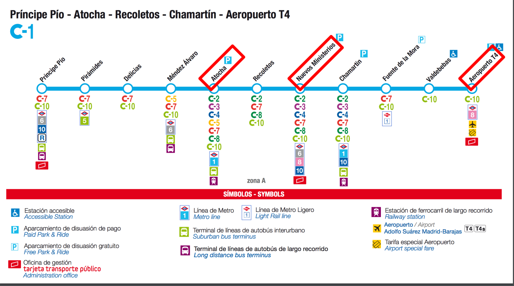
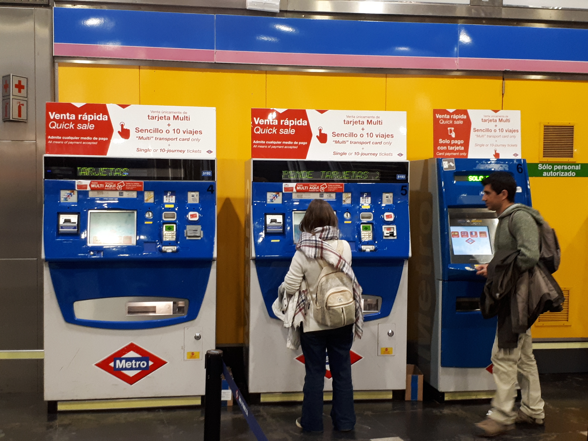
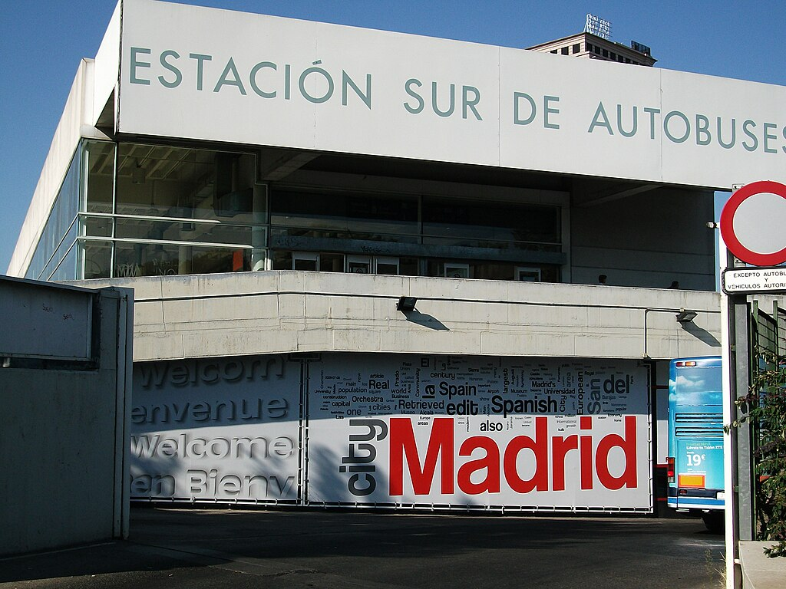
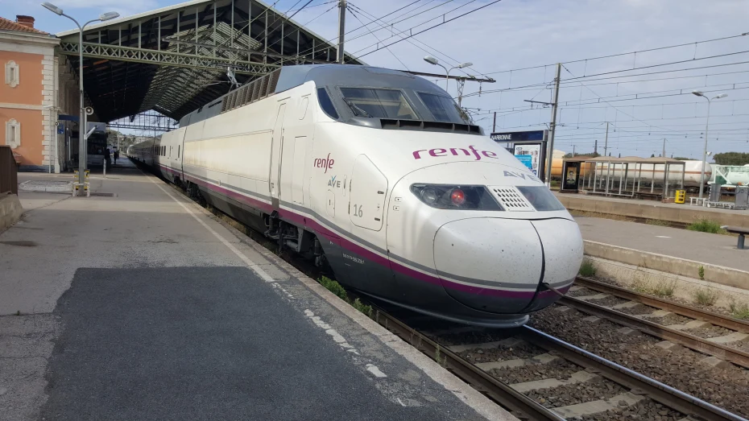

機場到市區往返交通
馬德里從機場到市區有機場巴士、火車及地鐵等選項，旅客可依照
旅遊地點及個人需求選擇適合的交通方式
機場巴士
馬德里機場總共有四個航廈(T1、T2、T3及T4)，四個航廈
皆可搭乘機場巴士，終點站為阿托查車站。
機場巴士24小時皆有營運，班次間隔為15~20分鐘，上車收費
，是前往市區最便利的交通方式。

區間火車(Renfe)
若要前往馬德里的郊區，火車是遊客通勤最好的選擇，價格也比機場巴士更便宜。若要前往市區，Renfe也有停Atocha, Nuevo Ministerio及Charmatin等主要車站。

市區地鐵
作為國際大都市，馬德里擁有完善的大眾運輸系統及地鐵網路，遊客可以搭乘地鐵到城市的任何一個角落。若要搭乘地鐵前往市區，遊客可以在機場轉地鐵的閘口購買票卡，票卡可重複儲值使用。

馬德里至其他城市
若要從馬德里到其他西班牙城市，可以選擇坐客運或是Renfe國鐵，旅客可以依照旅行地點選擇適合的交通工具
客運
若要搭乘客運前往其搭城市，遊客可以先選擇搭乘地鐵前往Estación Sur，此為馬德里最大的客運轉運站。西班牙客運是採劃位制，在轉運站中可以看到專門的售票窗口，假期期間常發生劃位額滿的狀況，若擔心無法準時搭車建議搭乘火車前往該地。

Renfe國鐵
若要坐火車前往其他城市，有高鐵(AVE)及一般火車可以選擇。
除了鄰近城市之外也可搭乘火車前往其他周邊國家，要注意的是火車站通常不會設在市中心的位置，遊客可能需要在下車後再轉乘巴士前往市區。
